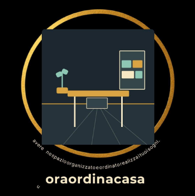

Ufficio, cantina o laboratorio nel caos? Ci pensa Romano. 💪
Hai una stanza, uno studio o un garage dove non trovi mai nulla e lo spazio è sfruttato male? Mi chiamo Romano e aiuto privati e professionisti a riorganizzare la disposizione di mobili, scaffali, attrezzature e luci per ritrovare l'ordine e lo spazio che serve, senza bisogno di ristrutturare. (Attenzione: Non sono un'impresa di pulizie pesanti o traslochi, ottimizzo e ordino ciò che hai già!) 🚀 Offerta di Lancio nella zona di [Tua Città]: Per questo mese cerco le prime 3 persone che vogliono rivoluzionare una stanza a un prezzo speciale, in cambio delle foto "Prima e Dopo". Mandami una foto della tua stanza in privato per un consiglio gratuito!

Una chiamata gratuita per capire il tuo spazio, le tue esigenze e come vivi o lavori lì. Da qui nasce il piano su misura.
Riordino stanze, uffici, studi e laboratori creando sistemi d'ordine su misura per te — pratici, belli e facili da mantenere nel tempo.
"L'ordine non è una questione di estetica. È lo spazio mentale che ti permette di fare quello che ami davvero."
Spazi che riorganizzano anche te. Lavoro su ambienti domestici e professionali. No traslochi, no sgomberi: solo ordine intelligente.
Veniamo a vedere lo spazio di persona, ascoltiamo le tue priorità e valutiamo insieme cosa funziona e cosa no.
Lavoriamo con te (o per te) per creare un sistema d'ordine logico, bello e — soprattutto — facile da mantenere nel tempo.
Siamo pronti ad accoglierti o a rispondere alle tue domande!